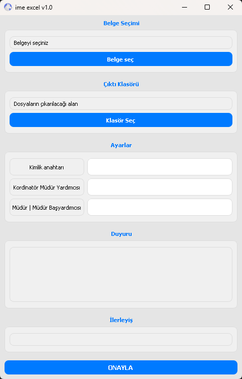

Öğretmenler İçin
Excel Otomasyon Çözümü
Programımız öğretmenlerin elle yapması gereken işlemleri otomatikleştirerek büyük ölçüde zaman kazandırır. Uygulama, önce öğretmenleri ve çalıştıkları firmaları ayırır, ardından bu firmalardaki öğrencileri listeleyerek gerekli raporları oluşturur.
Öğrenci sayısı formları otomatik oluşturma
Günlük, haftalık ve aylık görev formları
Hatasız ve baskıya hazır Excel çıktıları
